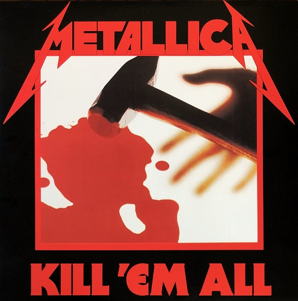
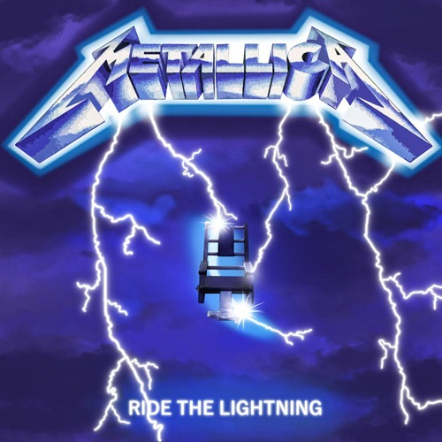
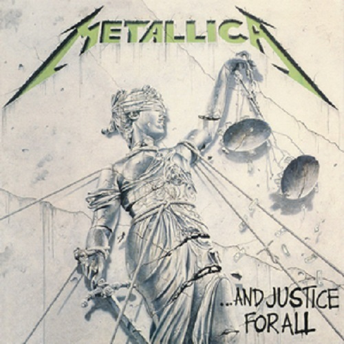
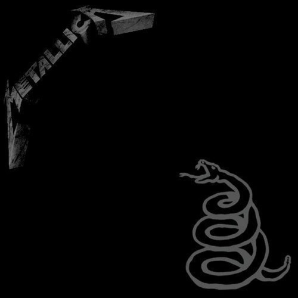
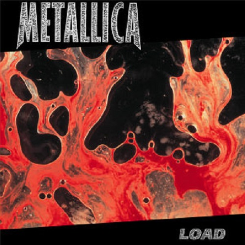
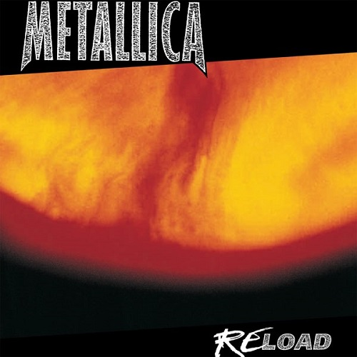
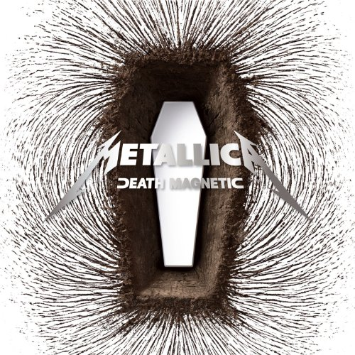
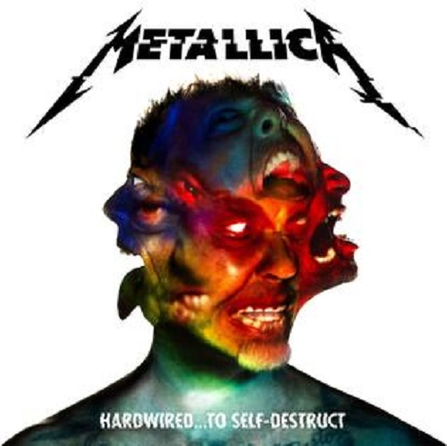
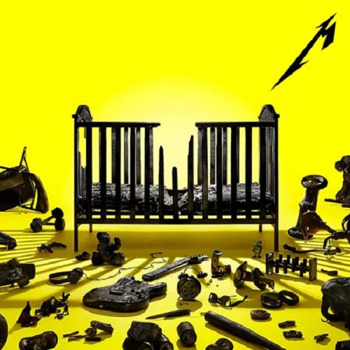

Discografía
Kill 'Em All
"Kill 'Em All" es el álbum debut de la icónica banda de heavy metal Metallica, lanzado en 1983. Este álbum es un monumento al nacimiento del subgénero thrash metal y marcó el comienzo de una era en la música pesada.
Con canciones como "Hit the Lights," "The Four Horsemen," y "Whiplash," "Kill 'Em All" se destaca por su velocidad vertiginosa, riffs de guitarra agresivos y letras rebeldes. La voz de James Hetfield y los solos de guitarra de Dave Mustaine (quien luego fue reemplazado por Kirk Hammett) brindan una dosis de energía cruda y poderosa.
El título del álbum refleja su actitud desafiante, y su impacto en la escena musical fue inmediato. Este disco estableció a Metallica como una de las bandas más prometedoras del metal y allanó el camino para álbumes clásicos posteriores como "Ride the Lightning" y "Master of Puppets".
"Kill 'Em All" es un testimonio perdurable de la innovación y la agresión de Metallica en sus primeros días, y sigue siendo una obra esencial en la historia del metal, influyendo a generaciones de músicos y aficionados al metal en todo el mundo.
Ride the Lightning
"Ride the Lightning," el segundo álbum de estudio de Metallica lanzado en 1984, es una obra maestra que consolidó la posición de la banda en la cima del thrash metal. Este disco llevó a Metallica a nuevos niveles de creatividad y virtuosismo musical.
Con canciones como "For Whom the Bell Tolls," "Fade to Black," y "Creeping Death," el álbum presenta una mezcla de velocidad implacable y momentos melódicos emotivos. Las letras exploran temas oscuros, desde la guerra hasta la mortalidad y la alienación, agregando profundidad a la música.
La portada, con un preso sentado en una silla eléctrica, representa la intensidad y el enfoque en temas controvertidos. "Ride the Lightning" también marca la primera colaboración de Metallica con el productor Flemming Rasmussen, quien ayudó a definir su sonido característico.
Este álbum solidificó la reputación de Metallica como líderes del thrash metal y les abrió las puertas a audiencias más amplias. "Ride the Lightning" es un clásico atemporal y un punto de referencia en la evolución del metal, con su influencia aún palpable en la música contemporánea.
Master of Puppets
"Master of Puppets," el tercer álbum de estudio de Metallica, lanzado en 1986, es ampliamente considerado como uno de los discos más influyentes y destacados en la historia del heavy metal. Este álbum llevó a Metallica a nuevas alturas de éxito y estableció un legado que perdura hasta hoy.
Con canciones icónicas como la pista principal "Master of Puppets," "Battery" y "Welcome Home (Sanitarium)," el álbum combina la velocidad del thrash metal con composiciones intrincadas y letras oscuras que exploran temas como el control, la adicción y la guerra.
La portada del álbum presenta una imagen perturbadora de cuerdas de marionetas, reflejando las letras y la sensación general del disco. "Master of Puppets" también marca la última colaboración de Metallica con su bajista original, Cliff Burton, cuya habilidad técnica y creatividad dejaron una huella indeleble en el álbum.
Este álbum elevó a Metallica al estatus de leyenda en la escena del metal y sigue siendo una fuente de inspiración para músicos de todo el mundo. "Master of Puppets" es una obra maestra del género y representa la cima de la creatividad y la destreza musical de la banda. Su legado perdura como uno de los álbumes más influyentes en la historia de la música pesada.
... And Justice for All
"...And Justice for All," el cuarto álbum de estudio de Metallica, lanzado en 1988, es un monumento musical y lírico que llevó la música de Metallica a nuevas profundidades conceptuales y técnicas. Este álbum marca un punto de inflexión en la carrera de la banda, presentando una complejidad musical y letras profundas que abordan temas sociales y políticos.
Con canciones como "One," "Blackened" y "Harvester of Sorrow," "...And Justice for All" es conocido por su complejidad musical, con cambios de ritmo intrincados y estructuras inusuales. Las letras profundas exploran cuestiones de injusticia, alienación y la degradación de los valores humanos.
La portada del álbum presenta la icónica imagen de Lady Justice, ciega y rota, simbolizando la crítica de Metallica a un sistema legal corrupto. El sonido del álbum se caracteriza por las guitarras pesadas y las partes de bajo notables de Jason Newsted, así como la batería técnica de Lars Ulrich y la voz distintiva de James Hetfield.
"...And Justice for All" es un clásico del metal progresivo y representa la evolución musical y lírica de Metallica. Su complejidad y profundidad temática continúan inspirando a fanáticos y músicos por igual, y es una obra esencial en la historia del metal.
Metallica (The Black Album)
El álbum homónimo de Metallica, ampliamente conocido como "The Black Album" debido a su portada completamente negra, es un punto de referencia en la historia del rock y el metal. Lanzado en 1991, marcó un cambio en el sonido de Metallica hacia un enfoque más accesible y melódico, lo que resultó en un éxito comercial masivo y una audiencia global.
"The Black Album" contiene algunos de los himnos más emblemáticos de la banda, incluyendo "Enter Sandman," "Sad But True" y "The Unforgiven." Estas canciones presentan riffs de guitarra inolvidables, letras poderosas y la distintiva voz de James Hetfield.
La producción pulida de Bob Rock contribuyó a su sonido masivo y limpio, atrayendo tanto a fanáticos del metal como a nuevos oyentes. A pesar de la controversia inicial entre los seguidores más antiguos, el álbum se ha convertido en un clásico indiscutible y uno de los discos más vendidos de todos los tiempos.
"The Black Album" solidificó la posición de Metallica como una de las bandas más grandes del mundo y sigue siendo un testimonio de su capacidad de evolución y su influencia en la música. Su legado perdura como una piedra angular del metal moderno.
Load
"Load," el sexto álbum de estudio de Metallica lanzado en 1996, marcó un giro audaz en la dirección musical de la banda. Este álbum se destacó por su enfoque en el hard rock y el blues, en contraste con el sonido de thrash metal que Metallica había perfeccionado en álbumes anteriores.
Con canciones como "Until It Sleeps," "King Nothing" y "Bleeding Me," "Load" presenta un Metallica más maduro y experimentador. El álbum también se caracteriza por su producción más pulida y la adopción de influencias musicales más variadas.
La portada del álbum, que presenta sangre y semen combinados en una obra de arte, generó controversia y discusión entre los fanáticos y críticos. Esto reflejó la naturaleza provocativa y desafiante del álbum.
A pesar de las opiniones divididas en su lanzamiento, "Load" ha ganado con el tiempo su estatus como una parte integral del catálogo de Metallica. Representa un período de evolución artística para la banda y muestra su capacidad para explorar nuevos territorios musicales sin dejar de mantener su identidad distintiva. "Load" es una pieza única en la trayectoria de Metallica y un capítulo intrigante en su historia.
Reload
"Reload," el séptimo álbum de estudio de Metallica, lanzado en 1997, es una extensión natural de su predecesor "Load". Al igual que su hermano, "Reload" continúa explorando las influencias del hard rock y el blues, aunque con un toque más oscuro y pesado.
Con canciones como "Fuel," "The Memory Remains" y "Devil's Dance," el álbum presenta un Metallica más maduro y melódico, con riffs de guitarra pesados y letras introspectivas. Las letras reflexionan sobre temas como la fama, la decadencia y la autorreflexión, añadiendo profundidad a la música.
La portada del álbum, una extensión de la de "Load," presenta un diseño similar con una mezcla de sangre y aceite, lo que refleja la estética y el enfoque oscuro del álbum.
Aunque "Reload" no alcanzó el mismo estatus icónico que algunos de los álbumes anteriores de Metallica, sigue siendo una parte importante de su evolución musical. Muestra la versatilidad de la banda y su capacidad para experimentar con diferentes estilos sin perder su esencia. "Reload" es una ventana a una fase distinta de la carrera de Metallica y continúa siendo apreciado por los fanáticos que valoran su diversidad musical.
St. Anger
"St. Anger," lanzado por Metallica en 2003, es un álbum que representa un período de cambio y desafío para la banda. Este álbum se caracteriza por su enfoque en el sonido crudo y la agresión emocional, marcando una desviación notable de los álbumes anteriores de la banda.
Con canciones como la pista principal "St. Anger," "Frantic" y "Some Kind of Monster," el álbum se destaca por su pesadez y letras introspectivas que exploran temas de ira, adicción y conflicto interno. La falta de solos de guitarra tradicionales y la batería con un sonido particularmente crudo agregan una capa adicional de intensidad.
La portada del álbum presenta una imagen distorsionada de la famosa calavera del logo de Metallica, lo que refleja la naturaleza discordante y experimental del álbum.
"St. Anger" recibió críticas mixtas de fanáticos y críticos, pero ha ganado un estatus icónico en la discografía de Metallica debido a su valentía en la experimentación. Representa un capítulo único en la historia de la banda y su capacidad para evolucionar y explorar nuevos territorios musicales. A pesar de sus polarizadas opiniones, "St. Anger" sigue siendo un álbum que suscita debate y reflexión.
Death Magnetic
"Death Magnetic," lanzado por Metallica en 2008, marcó un retorno triunfante a sus raíces thrash metal después de una serie de álbumes experimentales. Este disco representa un renacimiento para la banda, recuperando la energía y la agresión que la hicieron famosa en sus primeros años.
Con canciones como "The Day That Never Comes," "Cyanide" y "All Nightmare Long," "Death Magnetic" presenta riffs de guitarra poderosos, solos virtuosos y letras introspectivas. El álbum se caracteriza por su estructura de canciones más tradicional y una producción más cruda, lo que lo acerca al sonido clásico de Metallica.
La portada del álbum, con una imagen fragmentada y descompuesta, refleja la intensidad y la complejidad de la música y las letras.
"Death Magnetic" fue aclamado tanto por la crítica como por los fanáticos, considerándolo un regreso exitoso al thrash metal de alta calidad que había definido a Metallica en sus primeros días. Este álbum revitalizó la carrera de la banda y demostró que Metallica seguía siendo una fuerza dominante en la escena del metal. "Death Magnetic" es una celebración del legado de la banda y su capacidad para evolucionar y mantener su esencia.
Hardwired... to Self-Destruct
"Hardwired... to Self-Destruct," el décimo álbum de estudio de Metallica lanzado en 2016, es una declaración poderosa que recuerda a los fanáticos por qué la banda sigue siendo una fuerza dominante en el mundo del metal. Este álbum doble es un testimonio de la longevidad y la evolución constante de Metallica.
El álbum presenta una mezcla de canciones agresivas y melódicas, con énfasis en la velocidad y la ferocidad en canciones como "Hardwired," "Moth Into Flame" y "Spit Out the Bone." La lírica aborda temas contemporáneos, la alienación y la autorreflexión.
La portada del álbum muestra una combinación intrigante de cráneos y cables, lo que sugiere una exploración de la relación entre la humanidad y la tecnología.
"Hardwired... to Self-Destruct" recibió elogios tanto de críticos como de fanáticos, consolidando aún más la posición de Metallica como leyendas del metal. El álbum demostró que la banda seguía siendo relevante y capaz de producir música de alta calidad décadas después de su formación. "Hardwired... to Self-Destruct" es un recordatorio de la atemporalidad y la capacidad de innovación de Metallica en la escena del metal contemporáneo.
72 Seasons
72 Seasons es el undécimo álbum de estudio del grupo musical estadounidense de metal Metallica. Fue lanzado el 14 de abril de 2023, por su propio sello Blackened Recordings. El álbum es producido por Greg Fidelman, quien produjo el álbum de estudio anterior de la banda, Hardwired... to Self-Destruct (2016), es el segundo álbum de estudio de la banda que se lanzó a través de Blackened y al igual que su predecesor, todas sus canciones tienen un video musical. Es el álbum, seguido solamente de Load, con mayor minutaje de su carrera, con una duración total de 01:17:13. Tanto críticos musicales como su fanbase afirman que es debido a su complejidad y matices progresivos.